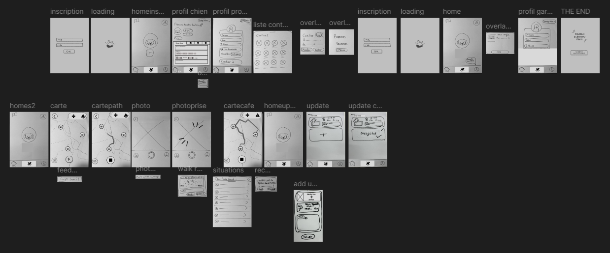
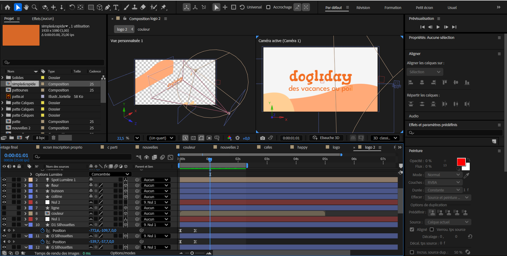

Context & Methodology
Dogliday addresses a powerful emotional challenge: how can you entrust your dog to a loved one without guilt or stress? For this project, the UX focus was primarily on reassurance. The goal was to create a continuous information bridge between the owner and the dog-sitter so that separation is no longer a source of anxiety.

User Insights & Analysis
User research revealed that 65% of owners feel guilty when leaving their pet. The main pain point identified was the lack of real-time updates, which creates a barrier to trust between owners and sitters.
"My main fear isn't the sitter's skills, it's the lack of news. I need to know if he ate and if he's happy in real-time."

Wireframes & Heuristic Validation
My process began with paper wireframes to lay the foundations of navigation. These sketches were quickly transposed into low-fidelity prototypes for user testing. This allowed us to validate flow clarity and iterate on the Information Architecture before moving to the high-fidelity phase.
| Heuristic Criterion | Implementation |
|---|---|
| Visibility of System Status | Real-time health alerts |
| User Control & Freedom | Easy booking edits/cancel |
| Consistency & Standards | Unified Design System |

UI & Design System
The major asset of this project is its comprehensive Design System. Every button, icon, and spacing was designed to be scalable. The visual identity uses soft curves and a reassuring palette to maintain a seamless brand identity across all touchpoints.

Communication & Motion Design
To support the launch, I created a promotional video using After Effects. The objective was to translate the app's easy and playful nature into movement, reinforcing the brand identity through fluid animations.

Work in progress — After Effects